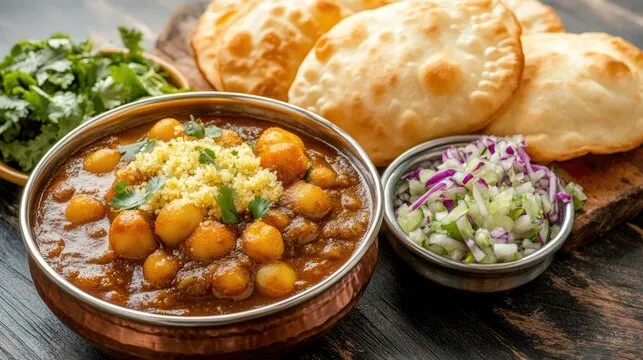

Chole Puri

Description
Chole Puri is a classic North Indian dish featuring spicy chickpea curry (Chole) served with deep-fried, puffed bread (Puri).
The rich, flavorful chole is made with aromatic spices, tomatoes, and onions, creating a deliciously tangy and mildly spicy taste.
Ingredients
For Chole:
- 1 cup dried chickpeas (or 1 can cooked chickpeas)
- 2 tablespoons oil
- 1 onion, finely chopped
- 2 tomatoes, pureed
- 1 teaspoon ginger-garlic paste
- 1 green chili (optional, for spice)
- 1 teaspoon cumin seeds
- 1 teaspoon coriander powder
- 1 teaspoon garam masala
- ½ teaspoon turmeric powder
- 1 teaspoon red chili powder (adjust to taste)
- 1 teaspoon salt (adjust to taste)
- ½ teaspoon amchur (dry mango powder) (optional)
- 2 cups water
- Fresh coriander leaves for garnish
For Puri:
- 2 cups whole wheat flour
- ½ teaspoon salt
- 1 teaspoon oil or ghee
- Water (as needed, to make dough)
- Oil (for deep frying)
Steps
For Chole:
- Soak dried chickpeas overnight in water. If using canned chickpeas, rinse and drain.
- In a pressure cooker or pot, cook the chickpeas with 2 cups of water and a pinch of salt until soft.
- In a pan, heat oil and add cumin seeds. Let them splutter.
- Add chopped onions and sauté until golden brown.
- Stir in the ginger-garlic paste and green chili. Cook for 1-2 minutes.
- Add pureed tomatoes and cook until the oil separates.
- Mix in coriander powder, turmeric, garam masala, red chili powder, and salt. Cook for another minute.
- Add the cooked chickpeas along with the water from boiling.
- Let it simmer for 10-15 minutes until the curry thickens.
- Garnish with fresh coriander leaves and serve hot.
For Puri:
- In a mixing bowl, combine whole wheat flour, salt, and a teaspoon of oil.
- Gradually add water and knead into a firm dough.
- Cover and let the dough rest for 20 minutes.
- Divide the dough into small balls and roll them into flat circles (puri size).
- Heat oil in a deep pan for frying.
- Once the oil is hot, fry each puri one at a time, pressing lightly to puff up.
- Flip and fry until golden brown, then remove and drain excess oil.
- Serve hot with chole.
Home